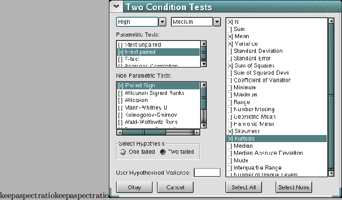

Analysing tests that have 2 samples is almost as easy as doing the one sample tests - maybe even easier! Go to the menu, click on ``Analyse'' and then ``2 sample tests...'', and the following dialog box will appear.

This dialog has 2 drop down boxes at the top. These are what you use to specify which columns of data are to be used in the analysis. Just like the one conditions tests dialog, on the right hand side is a list of descriptive statistics that you can select if you wish. The major difference for this dialog though is that there are a lot more tests available, and they have been split up into parametric and nonparametric tests. Of course, if you want to, SalStat will not stop you from performing both parametric and nonparametric tests on your data if you so wish!
Just select the tests you want, and check the right tail of hypothesis for the experiment and click okay. The results will appear on the output window.
NOTE - the F-test for variance ratios need to have a user hypothesised variance entered, and this is done in the little text box just above the ``Cancel'' button.